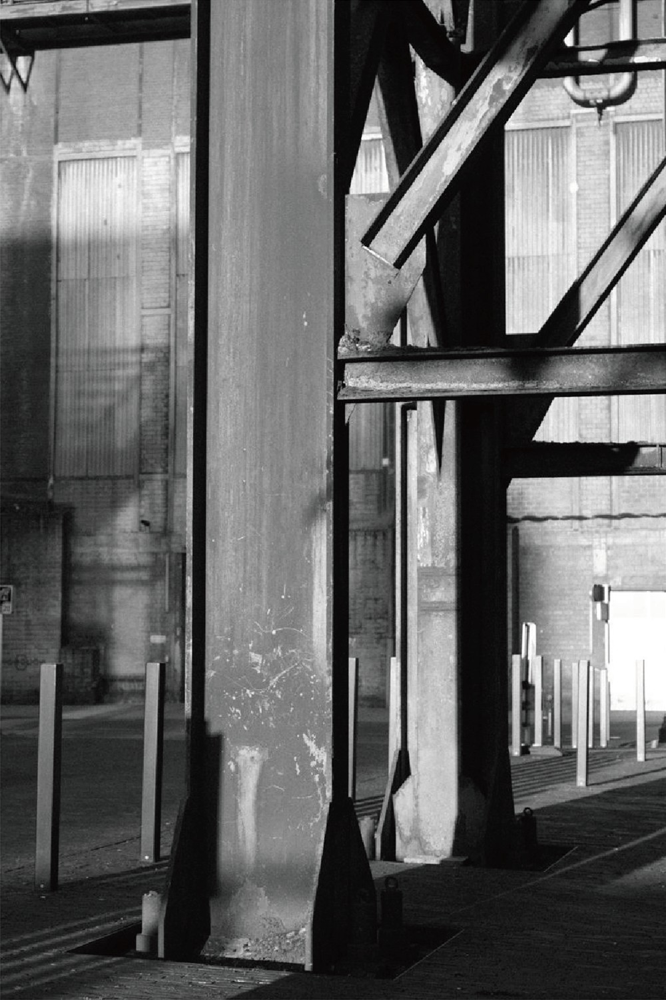
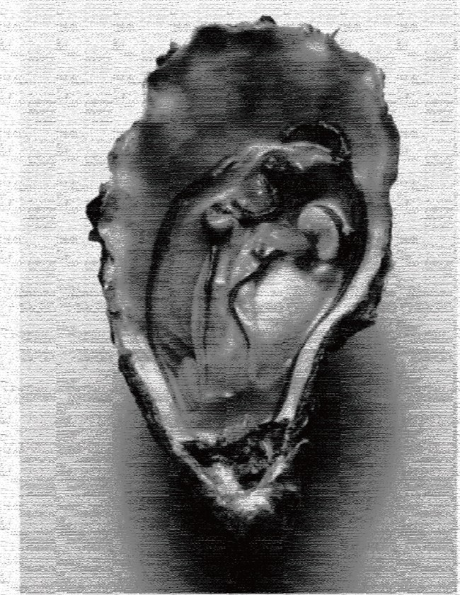
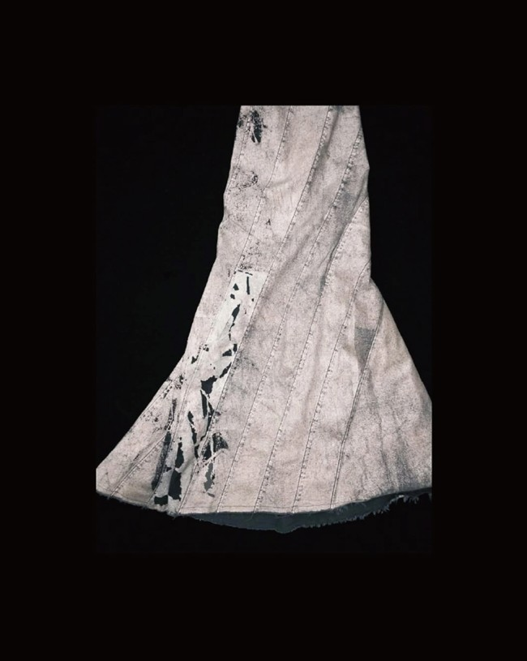

INDEPENDENT SPIRIT. UNCOMPROMISING FORM.城市之中 · 野性之内
IRON FOREST
FIG. 01 — 钢铁抱枕 / SOFT ARMOR
THE BRAND MANIFESTO做一只
做一只
钢铁动物。
为柔软叠一层硬壳，
为锋芒留一道出口。
BRAND DESIGN BY HANBAOCHAORENSCROLL TO ENTER THE FOREST ↓EST. 2026 — CN
01 / OUR PHILOSOPHY品牌理念
INSTINCT × WILLPOWER
真正有力量的人，
从不消灭自己的动物性。
直觉、野心、敏感、饥饿感、奔跑的欲望——
这些是生命最初的回声。
但世界并不总是柔软。城市、规则、压力、噪音，要求我们长出钢铁。于是我们提出一种新的生存姿态：做一只钢铁动物。
外表冷峻，内心滚烫；剪裁理性，身体自由；
看似克制，实则随时准备出发。
钢铁不是冷漠，是保护；动物不是野蛮，是真实。
服装不是伪装，而是你行走世界的第二层骨骼。
SOFT INSIDE.STEEL OUTSIDE.
为柔软叠一层硬壳，为锋芒留一道出口。
02 / BRAND PERSONALITY品牌性格
有边界。
也有旷野。
给城市游牧者、独立创作者、
行动派与不驯服者。
03 / VISUAL RESEARCH灵感档案
MOOD
BOARD.
别把野性关进笼子。
给它铠甲。
别让温柔失去锋芒。
让它长出骨骼。



在钢筋森林里，
保持动物的直觉；
在柔软身体里，
住进钢铁的意志。
行走，奔跑，生存。
并忠于自己。
↑钢铁森林 / IRON FOREST®做一只钢铁动物BRAND DESIGN BY HANBAOCHAOREN